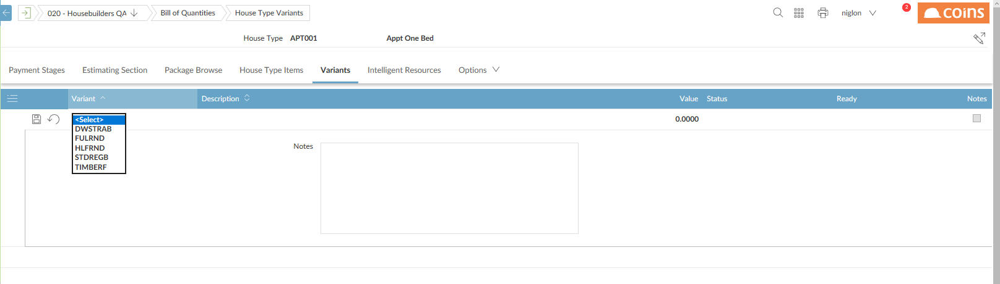
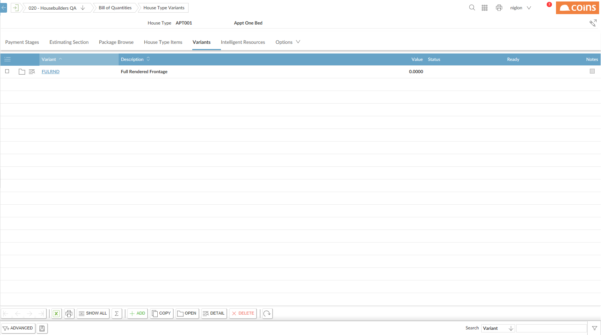
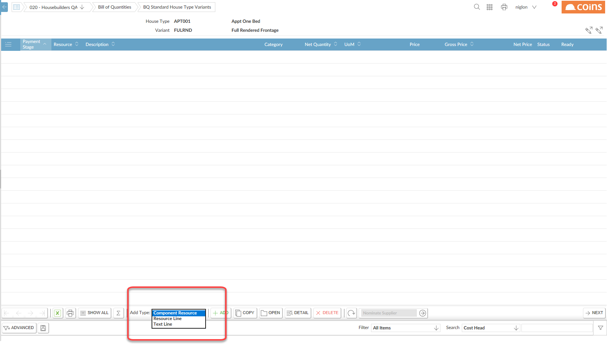
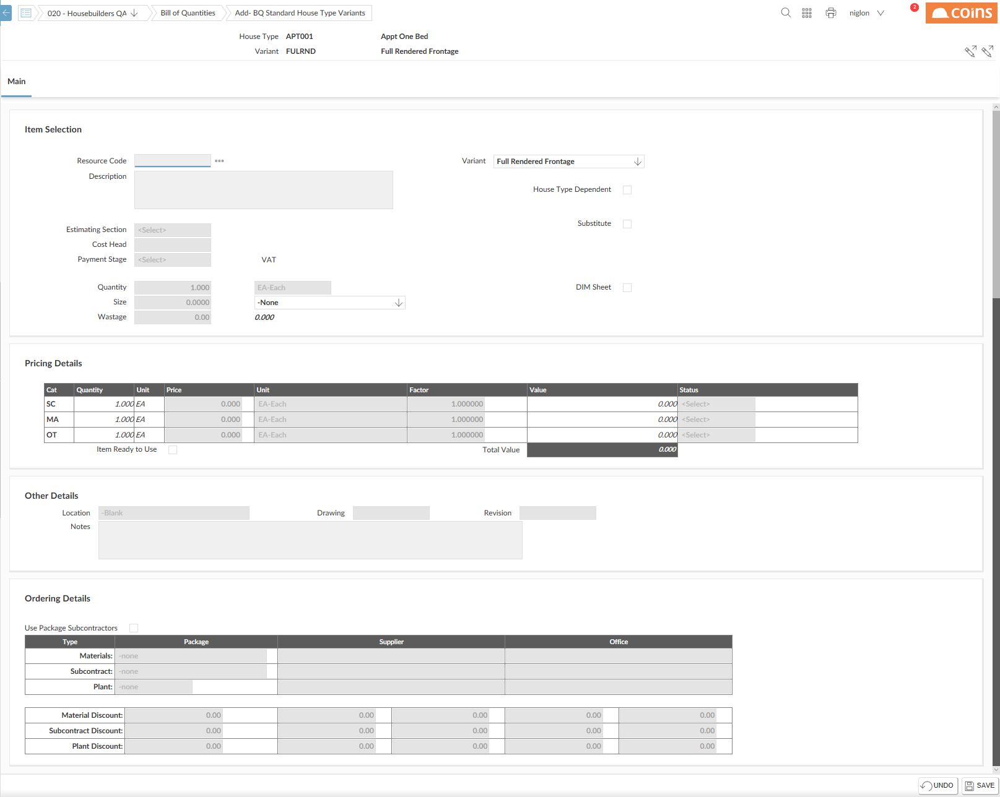

Either:
or
Click

Once you select the correct variant, click the save icon to apply the variant against the house type. When it is confirmed as saved, the variant name becomes a hyperlink, clicking on this hyperlink allows you to add resources to the variant.

Once you click the hyperlink, a new page will load allowing you to add the resources, nominate suppliers and apply price. Just like adding resources in other screens, you are able to do this specifically for the variant that you are working with, the only difference being that a ‘variant’ type can be selected when adding the resource in item selection.

Select the Add Type and click

Ensure that a package is selected in the ordering details.
Once you are happy with the resource click
When you have set up the variants, you can then use them to swap out a set of resources when the variant applies to the house type change.